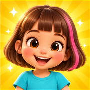

MiniMigMiniMig er en tryg og sjov app for børn fra 3 år. Vælg hår, øjne, tøj, hatte, sko, ting og baggrunde – og byg en figur, der ligner dig selv, en ven eller noget helt fantasifuldt.
Spil MiniMigPå telefon, tablet og computerHår, øjne, mund, tøj, kjoler, sko, briller, hatte, ting at holde og baggrunde fra slot til rummet.
Ingen reklamer, ingen konto og ingen dataindsamling. Kan bruges offline, når spillets filer er hentet.
Spillet husker figuren i denne browser. Ingen billeder eller navne sendes til os.